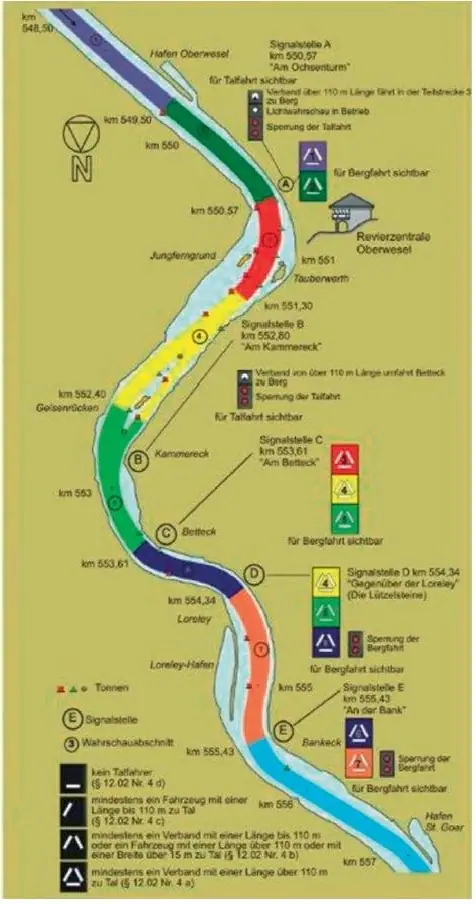

Anlage 9 Lichtwahrschau Oberwesel – St. Goar Rhein-km 548,50 – 555,43
Rheinschiffahrtspolizeiverordnung

Rheinschiffahrtspolizeiverordnung

German laws carry no copyright (§ 5 UrhG). Reproduced as published on gesetze-im-internet.de.